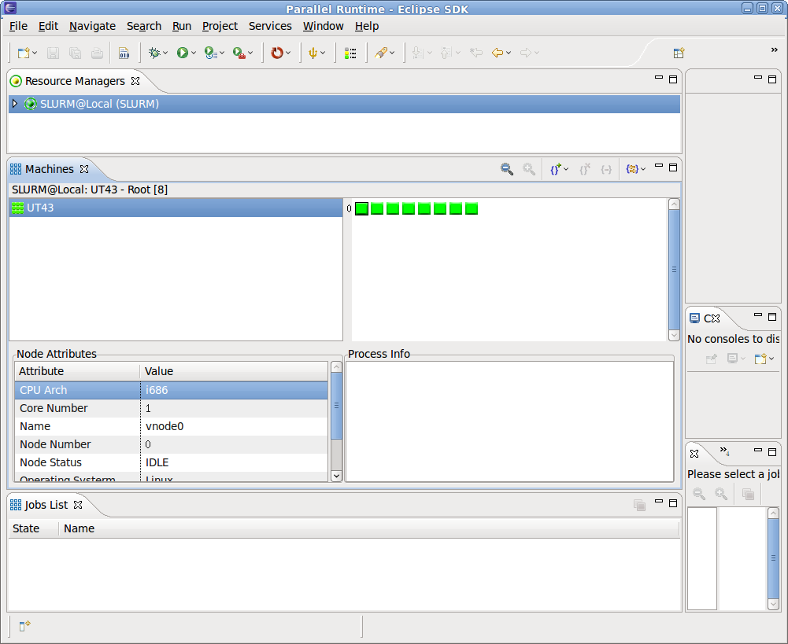

Once you have defined a resource manager, you must start it before it can run a parallel application using that resource manager. To start a resource manager, right-click over the name of the resource manager in the resource manager view then select Start resource manager from the popup menu. Once started, the icon for the selected resource manager will turn green.
If necessary, you can stop a resource manager by right-clicking over its name in the resource manager and selecting Stop resource manager from the popup menu. Normally, a resource manger will shutdown automatically when PTP is shutdown, and if it was running when PTP was shutdown, then it will automatically start when PTP is started again.
